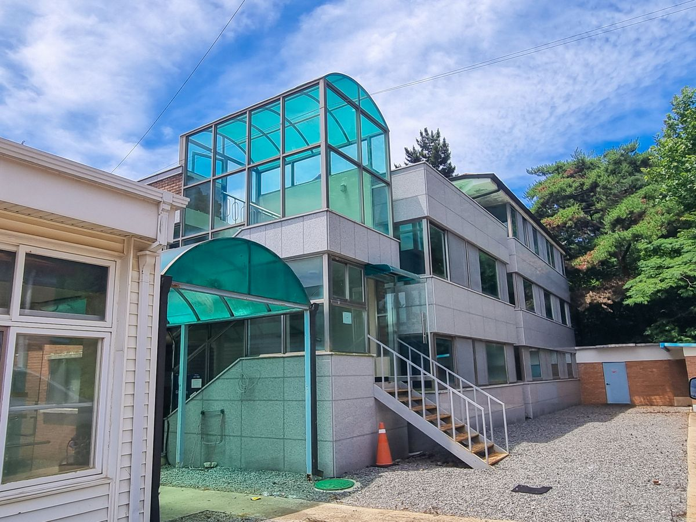

홈 › 소식 · 안내 › 오시는 길
오시는 길
2027 겨울 5~7차 캠프는 차수마다 장소가 다릅니다. 5 · 7차는 태안수양관, 6차는 강화 엘벧엘 생명교회에서 진행합니다.
Venue · 5차 · 7차
태안수양관
충남 태안군 소원면 소근로 630-15

📍
태안수양관충남 태안군 소원면 소근로 630-15
클릭하면 지도 서비스에서 위치를 확인할 수 있습니다
| 차수 | 5차 2027. 1. 7(목) ~ 9(토) · 7차 1. 21(목) ~ 23(토) (각 2박 3일) |
|---|---|
| 주소 | 충남 태안군 소원면 소근로 630-15 (태안수양관) |
| 시설 | 도심을 떠나 예배와 나눔, 쉼에 집중할 수 있는 수양 시설 |
Venue · 6차
엘벧엘 미니스트리 / 엘벧엘 생명교회
인천 강화군 하점면 고려산로 362 · 6차 장소 변경 (태안수양관 → 강화)
📍
엘벧엘 미니스트리 / 엘벧엘 생명교회인천 강화군 하점면 고려산로 362
클릭하면 지도 서비스에서 위치를 확인할 수 있습니다
| 차수 | 6차 2027. 1. 14(목) ~ 16(토) (2박 3일) |
|---|---|
| 주소 | 인천 강화군 하점면 고려산로 362 (엘벧엘 미니스트리 / 엘벧엘 생명교회) |
| 안내 | 5 · 7차와 장소가 다르니, 6차 신청자는 이동 계획을 꼭 확인해 주세요. |
| 대표 연락처 | 010-2977-9586 |
|---|---|
| 이메일 | AriseKoreaCamp@gmail.com |